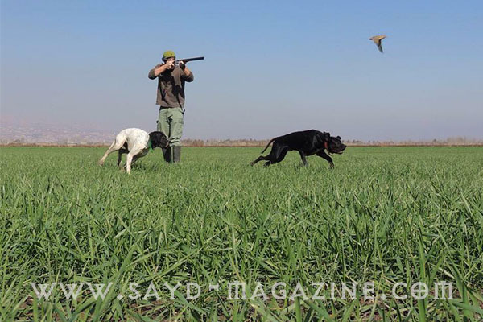
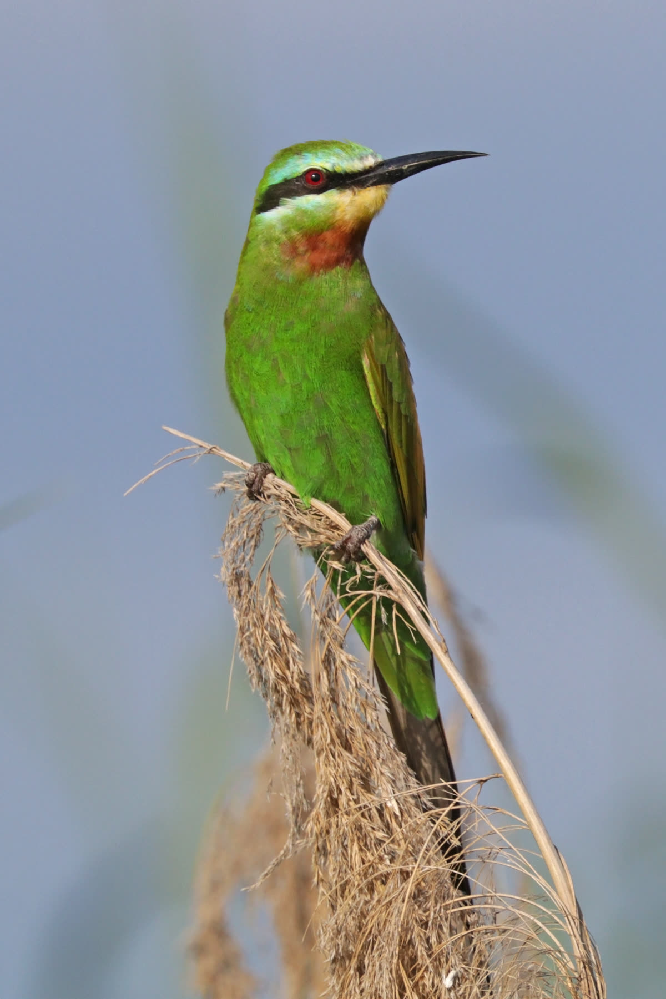
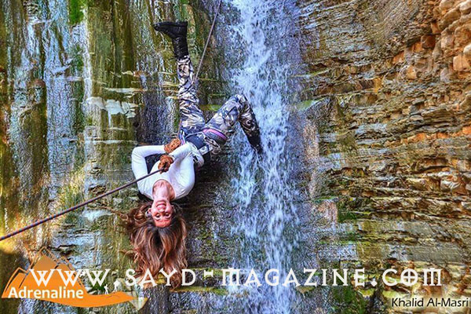

بيان صادر عن مجلة "صيد" بخصوص القدح والذم من قبل السيد إيلي مزرعاني
الإعلام ليس "ممسحة" لمزاج أحد.. ولن نسكت على الإساءة بعد نشر تعليق يحمل القدح والذم لمجلة "صيد"، ورئيس تحريرها أدونيس الخطيب بشكل شخصي، من قبل السيد إيلي مزرعاني رئيس Lebanese Hun…
الإعلام ليس "ممسحة" لمزاج أحد.. ولن نسكت على الإساءة بعد نشر تعليق يحمل القدح والذم لمجلة "صيد"، ورئيس تحريرها أدونيس الخطيب بشكل شخصي، من قبل السيد إيلي مزرعاني رئيس Lebanese Hun…
أقوى الناس هو الذي يمتلك جرأة التراجع عن الخطأ، فالأنسان المتطوّر الأخلاقي المحترم لا يرضى لنفسه أن يكون مصدر ضرر للبيئة او للإنسان.. ولعل أفضل مثال على ذلك هو ما قام به فريق trig…
تعتبر آخر وزارتين للبيئة في لبنان التي توالى عليهما الوزراء ناظم الخوري ومحمد المشنوق عرابتا تنظيم الصيد في لبنان، بالتعاون مع جمعية حماية الطبيعة في لبنانSPNL وبرنامج الطيور المح…
ا في وقت قصير برزت مجموعة من الصيادين اللبنانيين وإنضم اليهم عدد كبير من الصيادين العرب تحت إسم EL HUNT وقد أسس هذه المجموعة الصياد ايلي خالد الملقب بـ " الخال " مع أفراد كانوا أع…

صور معبرة للصياد اللبناني الياس سلهب تظهر علاقته مع كلابه ومع اللحظة الفريدة في الطبيعة ..
خلال رحلته في الطبيعة يضطر الصياد لإجتياز الحواجر الطبيعة أو الاصطناعية وهو يحمل بندقيته، وهذا الإنتقال يمكن أن يودي بحياته أو حياة من معه إذا لم يكن مدروسا وواعيا .. فالخطأ هنا ل…
أقام فريق EL HUNT لصياديه الأحد في 31-5-2015 جلسة "طلّو الصيادي" في Chtoura country club وهي جلسة تقيمها جمعية حماية الطبيعة في لبنان SPNL بالتعاون مع مجلة "صيد" SMومركز الشرق الأ…
خرطوش الـ (Slug) ويعرف أيضا بأسماء كثيرة (فراش - شفر...) وهو يستخدم لصيد الحيوانات الكبيرة (كالخنزير).. ولكن قبل الكلام عنه لابد لنا أن نتوقف عند أنواع السبطانات الموجودة: 1-Smoot…
بهدف نشر الوعي حول حقوق طيور البط خصصت السلطات البريطانية بحسب موقع "بورد باندا" ،ممرات مخصصة للبط على طول مسارات الممر المائي في كل من لندن وبرمنغهام ومانشستر وقد تم إطلاق هذه ال…
يحتضن إقليم الجديدة في المملكة المغربية ما بين 29 و31 ايار الجاري، فعاليات الدورة الثالثة لمهرجان الصيد بالصقور تحت شعار "تقاليد عريقة وتراث عالمي". ويُشارك نادي صقاري الإمارات، ب…
بعد أن حلمت في صغرها أن تكون صيادة بر وبحر كأبيها ورفاقه .. حققت ماريا الياس حلمها في الكبر، وحملت بارودة الصيد والصنارة لتصبح واحدة من فريق مؤلف من 4 صيادين في العائلة، الأب والأ…

، الإسم : وروار أزرق الخد،المعروف علميا بإسم Merops persicus الوصف : طائر ذو لون أخضرلامع وأزرق على الخدين اما الرقبة فهي محمرة، يتغذى حصريا على الحشرات بعد التقاطها بطريقة فنيّة…
[caption id="attachment_2237" align="alignleft" width="480"] زنوبيا: أنثى طائر أبو منجل الأصلع المهدد بالإنقراض[/caption] أطلقت جمعية حماية الطبيعة في لبنان SPNL ومركز الشرق الأوس…
الإسم : صياد السمك الأخضر، المعروف علميا بإسم ( Alcedo atthis) الوصف : طائر ذو لون أزرق لامع والبطن بني محمر،يتغذى على الأسماك الصغيرة بعد الغوص بطريقة فنيّة وسرعة صاروخية لإستخرا…
في إطار إستكمال الخطوات العملية التي أعلن عنها شفهيا في مناسبات عدة لأجل حماية الطبيعة والبيئة والطيور بيد صياديه، قام فريق EL HUNT الأحد 10-5-2015 بنشاط مميز دعا فيه اعضاءه ومحبي…
لا يمكن أن تسمع عن الفروسية العربية وعالم الخيول دون أن تشعر بحرارة ضوء إسم لارا صوايا. هذه المرأة اللبنانية التي أثبتت قدرة مذهلة على إدارة أهم مهرجان للخيول العربية " مهرجان سمو…
الإسم : حمام الغاب او الدلم، المعروف علميا بإسم (Columba palumbus). الوصف : طائر ذو لون رمادي و أزرق مع بقعة مائلة بيضاء على كل من جانبي العنق، وهو طائرحذر جدا يطير بسرعة في حال ش…

عالم المغامرة لا ينتمي إلى دولة أو زمن أو جنس معيّن، هو عالم قائم بذاته ينتمي إليه الطموح والحب والشغف في الاكتشاف،إنه عالم اختبار القدرات والتحدي وتذليل الصعوبات. دينا شابة مغامِ…
حين تسمعه تدخل معه الى عشقه المفرط للصيد وحب الطبيعة والحيوانات، فهو الذي عاش وسط البريّة في كل ظروفها المناخية وعرف الكثير عنها. علّم أبنه أحمد ( 20 عاما ) وأبنته ريم ( 18 عاما )…
أقام فريق Air Rifle Lebanon مباراته الكبيرة السنوية (الأحد 3-5-2015) على ميدان Chtoura Country Club الذي يديره السيد جورج عاصي، وقد تنافس حوالي 40 مشترك من ذكور وإناث، وسط تنظيم م…
الصياد الخبير يعلم أن اللعب بالسلاح أو حمله بطريقة خاطئة قد يودي بحياته أو حياة آخرين، ولهذا تراه يتعامل بمسؤولية وحرص كي لا يسبب اي ضرر لنفسه او للناس .. هذه أهم طرق حمل بندقية ا…
ا لإسم : القمري أو الترغل ومعروف علميا بإسم (Streptopelia Turtur) . الوصف : طائر ذو لون بني ورمادي مع بقعة مائلة بيضاء وسوداء على كل من جانبي العنق. الهوية : من طرائد الصيد في لبن…
نحن على عتبة شهر أيار، هذا الشهر الذي يعد صعبا على الصياد اللبناني، حيث اننا لا زلنا بعيدين عن شهر أيلول و بداية موسم جديد. لكن ابتداء من هذا الشهر يبدأ الحنين و تشتعل الأشواق الى…